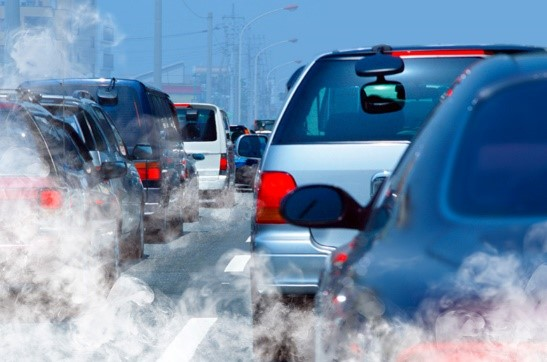
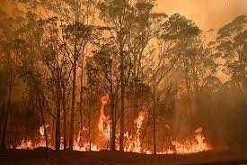
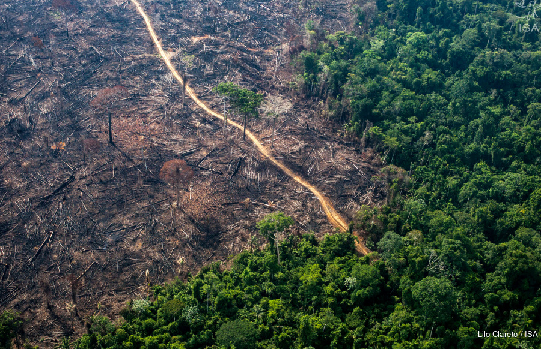
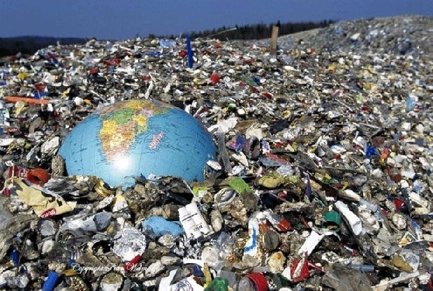
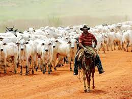

Geradores de Gases do Efeito Estufa
Combustíveis Fósseis
É a denominação dada a um grande grupo de combustíveis não renováveis que foram formados há milhares de anos a partir de restos de animais e vegetais. Esses recursos representam na sociedade 75% da demanda energética mundial, sendo utilizados em veículos, industrias e residências. Essas fontes são o carvão mineral, gás natural, petróleo e seus derivados, como óleo diesel e gasolina. A queima dos combustíveis fosseis geram a emissão de poluentes atmosféricos e a intensificação do efeito estufa e também a chuva ácida com a emissão de dióxido de enxofre e de óxidos de nitrogênio. Para reduzir os efeitos da queima dos combustíveis fósseis, tendo como sua principal origem a queima de combustível por carros, caminhões e ônibus. A solução seria a utilização de transporte público, diminuindo a utilização de carros e a ampliação de transportes públicos como trens e metros que utilizam energia limpa, reduz a emissão dos poluentes, a redução de utilização do carvão mineral para outras fontes de energia limpa e sustentável.
Queimadas
As queimadas são atividades ocorrem em áreas de floresta ou pastagem, e ocorrem para diversas finalidades, como limpeza de vegetação para preparo do solo para agricultura e pecuária ou incêndios espontâneos ocorrendo de forma natural. A ONU reconhece como os principais fatores para ocorrência de queimadas os raios, incendiários, queimadas para limpeza, fumantes, fogo campestres, operações florestais, estradas de ferro e diversos, que são incêndios que não se encaixam nos grupos anteriores e ocorrem de forma rara ou incomum. Aumentaram significativamente em 2020. Alguns países tem aumentado os focos de incêndio como o Brasil, Austrália, Estados Unidos e alguns países do continente Africano. As queimadas atuam diretamente para o agravamento do efeito estufa, destruição ambiental, destruição da fauna, e emissão de gases poluente causando doenças respiratórias. A redução das queimadas está relacionada a uma boa gestão dos incêndios florestais e redução de queimadas realizadas pelo homem de forma acidental ou proposital, atribuindo punições mais severas a incêndios criminosos e para limpeza.
Desmatamento
As florestas produzem substâncias que resfriam a atmosfera com seus compostos orgânicos voláteis biogênicos, emitidos pelas árvores e vegetação tendo um papel importante na regulação da temperatura do planeta. A substituição de florestas por pastagens que não emite estes compostos, acaba trocando um ambiente que resfria por outro que não resfria, aumentando a temperatura em 0,8ºC. Estudiosos afirmam que hoje não existe nenhuma tecnologia para reduzir o aquecimento global melhor do que replantar a floresta. A China mantem o maior programa de reflorestamento do mundo. O Brasil se comprometeu no Acordo de Paris a recuperar 12 milhões de hectares de florestas, uma área equivalente ao Estado de São Paulo até 2030. Reduzir o desmatamento é necessário, e medidas são necessárias, como politicas de fiscalização e controle devem ser efetivas, cobrança de imposto rural, fechamento do mercado para carne de procedência ilegal, provida de áreas devastadas.
Lixo
O Brasil é o quinto maior produtor de lixo do mundo, ficando atrás de Estados Unidos, China, União Europeia e Japão. Produzimos cerca de 192 mil toneladas de lixo, sendo que 41% não tem destinação correta. Todo o Lixo gerado vai para os lixões e gera o biogás, um dos principais causadores do efeito estufa, além do gás carbônico , entre outras impurezas. Todos esses gases são prejudiciais ao meio ambiente e agravam o efeito estufa. A diminuição do lixo é um fator importante, podendo ser viabilizado com a redução de produção de embalagens e as utilizadas devem ser recicláveis, reduzir o desperdício de lixo orgânico. O crescimento desenfreado da população mundial e das cidades, trouxeram a necessidade de grande desenvolvimento de produtos industrializados, desmatamento de muitas áreas para plantio ou moradias, geração enorme de quantidades de lixo e geração de alimentos, sendo necessário um consumo de energia de grandes proporções, que trouxeram danos ao nosso planeta com emissão de “gases estufa” proporcionando o aquecimento global.
Agricultura e Pecuária
As fontes agrícolas de gases de efeito estufa, provém do cultivo do arroz irrigado por inundação, a pecuária, dejetos animais, o uso agrícola dos solos e a queima de resíduos agrícolas, promovem a liberação de gás metano na atmosfera. Estima-se que cerca de 55% das emissões antrópicas de metano provem da agricultura e pecuária juntas. A proteção das terras contra as queimadas e também o desenvolvimento da agricultura de baixo carbono, focando em técnicas mais sustentáveis, capacitando produtores para boas práticas na agricultura e pecuária.